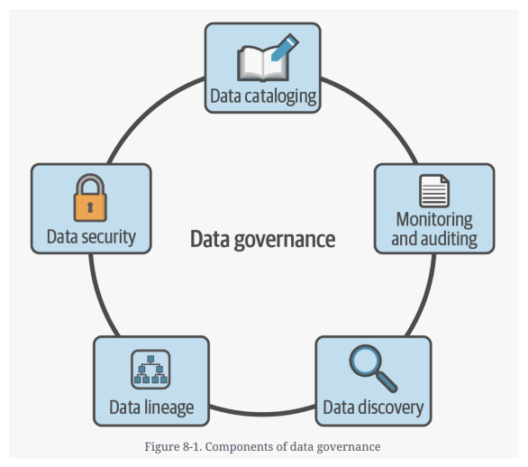
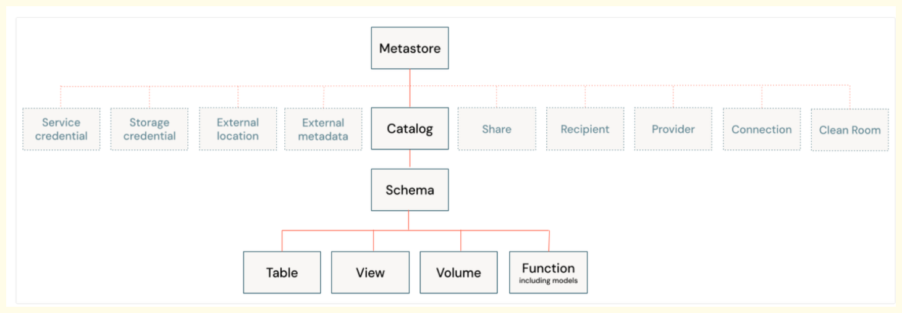
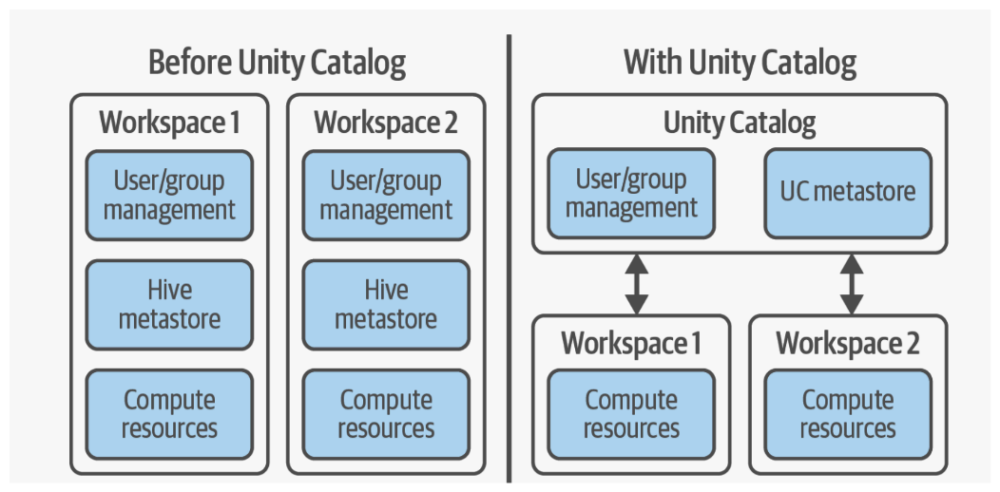
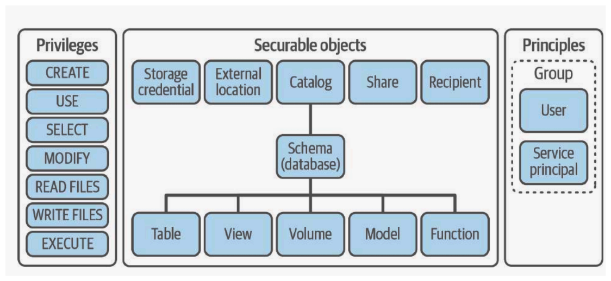
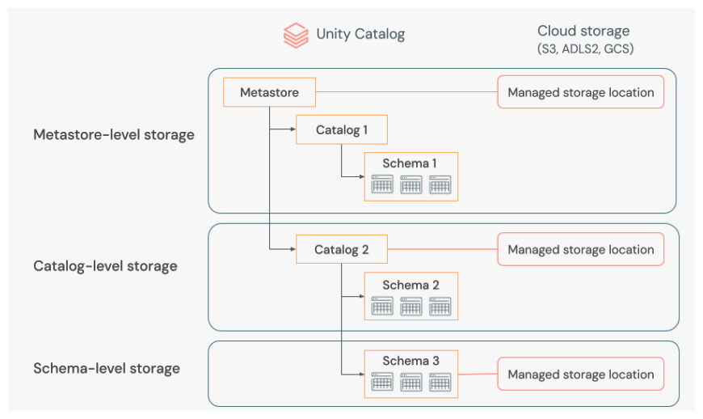

Unitycatalog
Data Governance#

Data governance is a strategic approach to managing data within an organization, ensuring that data is accurate, secure, and used responsibly. It involves the development and enforcement of policies and procedures to control data across various stages of its lifecycle—from ingestion and storage to processing and sharing.
-------------------------------------------------------------------------------------------------------------
Five Pillars of Data Governance#
Unity Catalog provides five major capabilities that enable robust data governance across Databricks workspaces:
-
Access Control: This feature allows administrators to control precisely who can see which data and objects (tables, schemas, catalogs). This ensures that sensitive data (e.g., 10 highly sensitive tables out of 100) are only visible to authorized senior personnel, such as senior data engineers or analysts.
-
Auditing: UC allows administrators to track and review all activities within the catalog, including which users are running queries, what queries are being executed, and which queries are using the maximum compute resources. This provides necessary transparency.
-
Lineage (Diagram/Example): This feature tracks the data flow, showing the source (upstream) and consumption (downstream) of data objects.
Example
If a Gold layer table is reporting incorrect numbers, lineage allows the engineer to quickly track back the dependencies: identifying that Gold Table A uses Silver Table X, which in turn uses Bronze Table Y, quickly identifying the source of the issue. This drastically reduces investigation time from days to hours.
-
Quality Monitoring: Users can create monitoring dashboards (similar to KPIs) to track the behavior and performance of their queries and data quality metrics.
-
Data Discovery: This feature acts as a central repository for metadata, allowing users to easily find crucial information about tables, such as data types, table type (managed or external), and storage location, eliminating the need to manually remember details for hundreds of tables.
-------------------------------------------------------------------------------------------------------------
What is Unity Catalog#
In the context of data, governance means ensuring your data is secure, available, and accurate. Unity Catalog is the feature in Databricks that provides this capability.
Unity Catalog offers a "unified" governance model, which means you "define it once and secure it everywhere". This is a key benefit, making it a popular feature in Databricks.
Without Unity Catalog, each Databricks workspace must be managed individually, including its users, metastore, and compute resources.
With Unity Catalog, you get centralized governance, allowing you to manage all your workspaces from a single, account-level location. This simplifies administration, as you can manage users and metastores at the account level and then assign them to specific workspaces.
Features
Unity Catalog is a centralized, open-source solution that provides security, auditing, data lineage, and data discovery capabilities. Because it's open source, the code is publicly available on GitHub.
-------------------------------------------------------------------------------------------------------------
Architecture#

Unity Catalog utilizes a four-layered hierarchy, which simplifies governance and organization across Databricks workspaces.
-
Metastore (Level 0): The top-level container for metadata. Also known as repository to store metadata. Can only create 1 metastore per region.
-
Catalog (Level 1): Equivalent to a traditional database.
-
Schema (Level 2): Also known as databases, schemas contain the data objects. A common industry practice is organizing schemas by Medallion layers (Bronze, Silver, Gold).
-
Data Objects (Level 3): These are the resources stored within the schema, including Tables, Views, Volumes, and Functions.
The Metastore is the central repository where metadata about data and AI assets (models, permissions) are registered.
Note
• Requirement: For any Databricks workspace to use Unity Catalog, a Unity Catalog Metastore must be attached.
• Region Constraint: Only one Metastore can be created per region where you have workspaces.
-------------------------------------------------------------------------------------------------------------
Comparison: Databricks Architecture (Pre-UC vs. Post-UC)#
Unity Catalog fundamentally revolutionized Databricks architecture by addressing limitations inherent in the previous approach (often Hive Metastore).

| Feature | Pre-Unity Catalog (Hive Metastore) | Post-Unity Catalog (UC Metastore) |
|---|---|---|
| Metastore Count | Multiple Metastores required, typically one default Metastore per workspace. | One global Metastore manages all associated workspaces in that region. |
| Data Storage (Managed Tables) | Managed data was distributed across multiple storage accounts, requiring the management of "N" number of ADLS Gen 2/S3 accounts. | Managed data is stored in a single, unified storage account linked to the Metastore. |
| Data Sharing | Managed tables/metadata could not be easily shared directly across different workspaces. | Managed tables can be shared across all attached Databricks workspaces. |
| Governance | Lacked centralized governance, lineage, and auditing capabilities provided by UC. | Centralized data governance, lineage tracking, and comprehensive auditing are standard. |
-------------------------------------------------------------------------------------------------------------
Key Architectural Changes#
There are three main components to the changes implemented by Unity Catalog:
-
Centralized user and group management: Unity Catalog utilizes the account console for managing users and groups, which can then be assigned to multiple workspaces. This approach means that user and group definitions are consistent across all workspaces assigned to Unity Catalog.
-
Separation of metastore management: Unlike the workspace-specific metastore used previously. Unity Catalog’s metastores are managed centrally per cloud region through the account console. A single Unity Catalog metastore can serve multiple workspaces, allowing them to share the same underlying storage. This consolidation simplifies data management, improves data accessibility, and reduces data duplication, as multiple workspaces can access the same data without needing to replicate it across different environments.
-
Centralized access control: Access controls within Unity Catalog are controlled centrally and apply across all workspaces. This ensures that defined policies and permissions are enforced consistently across the organization, thereby enhancing overall security
-------------------------------------------------------------------------------------------------------------
The Three-Level Namespace#
A key concept introduced with Unity Catalog is the three-level namespace for accessing data.
To access a table or view, you must specify its full path using the format: catalog_name.schema_name.table_name.
Example
If you have a table named sales under a schema named bronze in a catalog named dev, you would access it using dev.bronze.sales. This structure ensures data is securely accessed based on its specific catalog and schema location.
-------------------------------------------------------------------------------------------------------------
UC security Model#

-------------------------------------------------------------------------------------------------------------Managed Storage Location Hierarchy#
Unity Catalog determines where the underlying data for managed tables is stored based on a principle of precedence: the lowest level in the hierarchy that has a defined storage location takes priority.

Note
If storage is defined at Object/Table level (External Tables), that location is used.
If not defined at the object level, UC checks the Schema level.
If not defined at the schema level, UC checks the Catalog level.
If not defined at the catalog level, the default Metastore managed location is used.
If both the Metastore and Catalog have associated storage accounts, the Catalog's location gets priority because it is "more closer to the object".
-------------------------------------------------------------------------------------------------------------
Managed Tables vs. External Tables#
| Feature | Managed Table | External Table |
|---|---|---|
| Metadata Storage | Metastore. | Metastore. |
| Data Storage | Managed Data Lake (linked to Metastore). | External Data Lake (owned by the user). |
| Data Ownership | Managed by Databricks. | Owned by the user. |
| DROP Command | Drops both the metadata (table definition) AND the underlying data files. | Drops only the metadata/table definition. The underlying data files remain intact in the external data lake. |
| Optimization | Databricks automatically handles optimization (liquid clustering, partitions), offering high performance. | User must manage optimization and performance externally. |
| Recovery | Supports the UNDROP TABLE command, allowing dropped data to be recovered within 7 days. |
Not applicable, as data files are not deleted by the DROP command. |
Note
Managed tables are increasingly preferred due to performance gains and the introduction of the UNDROP feature, mitigating the risk of accidental data deletion.
-------------------------------------------------------------------------------------------------------------
Volumes: Governing Non-Tabular Data#
Volumes are Unity Catalog objects, similar to tables and views, but they provide a governance layer over non-tabular data sets (files).
Volumes allow users to store, access, and govern files in any format (structured, semi-structured, unstructured, e.g., CSV, PDF) directly through the Unity Catalog namespace.
Example
Instead of reading a CSV file using the complex cloud path, you reference it using the UC Volume path format: volumes/<catalog_name>/<schema_name>/<volume_name>/<file.csv>.
Both external volumes (linked to external containers, like the raw data container) and managed volumes (stored within the UC managed location) can be created.
-------------------------------------------------------------------------------------------------------------
Advanced Data Security: Functions and Data Masking#
Unity Catalog enables advanced data security policies, such as data masking, using Functions—the fourth major object type housed within a schema.
Data masking involves hiding or obscuring sensitive data (like salary or personal identifiers) from unauthorized users while allowing specific, authorized teams (like HR or owners) to see the real values.
Workflow for Data Masking:
- Identify Target: Identify the sensitive column (e.g.,
salary) in the target table (e.g.,employee). - Create Group: Ensure the authorized users are part of a specific group (e.g.,
AdminsorHR_Team). - Create UC Function: Define a SQL function within the Unity Catalog hierarchy (e.g.,
external_catalog.external_schema.masking) that dictates the masking logic. Logic Example: The function uses the built-inis_account_group_member('<group_name>')function inside aCASEstatement. If the current user is a member of the authorized group, the function returns the real input value (salary); otherwise, it returns a masked value (e.g., ``). - Apply Mask: Use the
ALTER TABLEcommand to apply the masking function to the target column: - Result: When an unauthorized user queries the table, they see the masked values. When an authorized user (who is a member of the defined group) queries the table, they see the real, unmasked data.